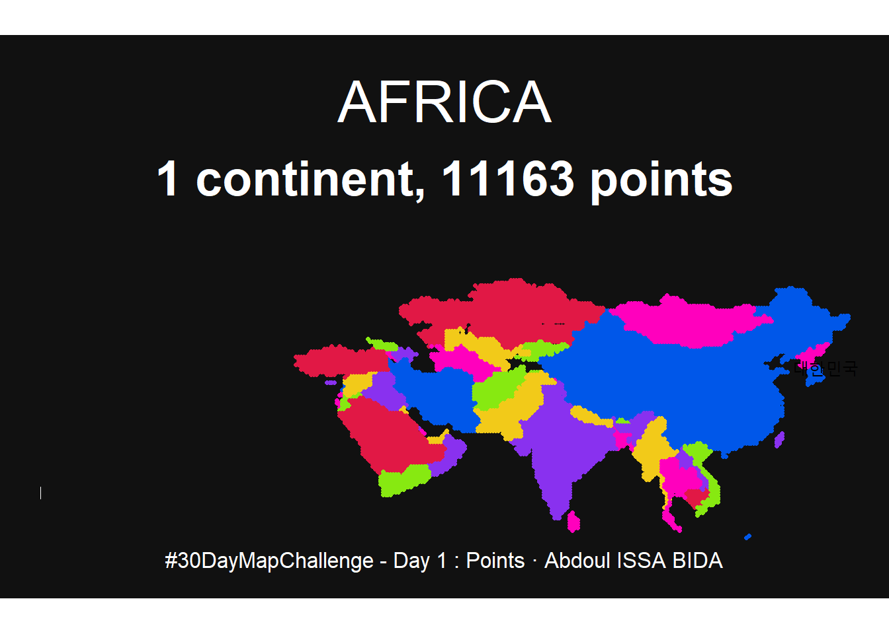
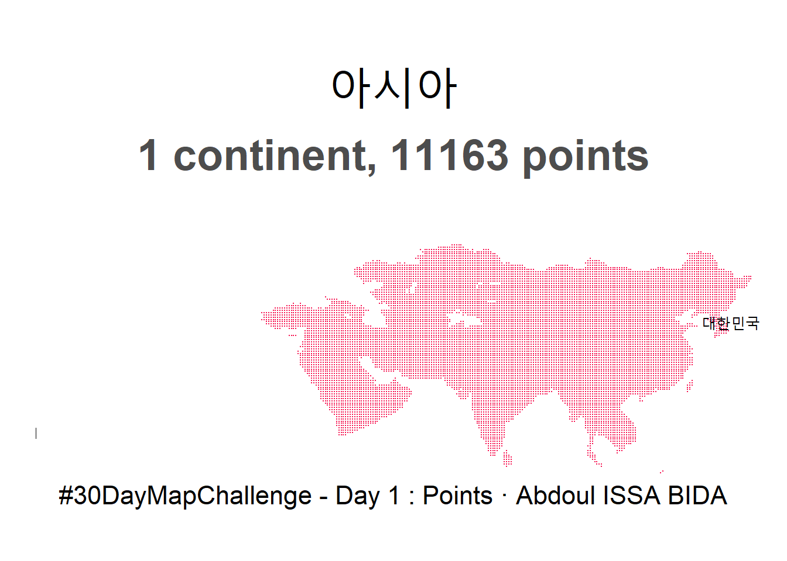

# Libraries Loading -------------------------------------------------------
library(tidyverse)── Attaching packages ─────────────────────────────────────── tidyverse 1.3.2 ──
✔ ggplot2 3.4.0 ✔ purrr 1.0.0
✔ tibble 3.1.8 ✔ dplyr 1.0.10
✔ tidyr 1.2.1 ✔ stringr 1.5.0
✔ readr 2.1.3 ✔ forcats 0.5.2
── Conflicts ────────────────────────────────────────── tidyverse_conflicts() ──
✖ dplyr::filter() masks stats::filter()
✖ dplyr::lag() masks stats::lag()library(sf)Linking to GEOS 3.9.3, GDAL 3.5.2, PROJ 8.2.1; sf_use_s2() is TRUElibrary(ggtext)
library(maps)
다음의 패키지를 부착합니다: 'maps'
The following object is masked from 'package:purrr':
map# Data Reading and Wrangling ----------------------------------------------
# Generating pixel grid
lat <- tibble(lat = seq(-90, 90, by = .5))
long <- tibble(long = seq(-180, 180, by = .5))
dots <- lat %>%
full_join(long, by = character())
as_tibble()Warning: The `x` argument of `as_tibble()` can't be missing as of tibble 3.0.0.# A tibble: 0 × 0dots <- dots %>%
mutate(country = map.where('world', long, lat),
lakes = map.where('lakes', long, lat)) %>%
filter(!is.na(country) & is.na(lakes)) %>%
dplyr::select(-lakes)
world <- rnaturalearth::ne_countries(scale = "medium", returnclass = "sf") %>%
filter(region_wb != "Antarctica")
dots <- dots %>%
mutate(
country = case_when(
country %in% c("Comoros:Grande Comore", "Comoros:Anjouan") ~ "Comoros",
country %in% c("Cape Verde:Santo Antao","Cape Verde:Sao Tiago") ~ "Cape Verde",
country == "Guinea-Bissau" ~ "Guinea Bissau",
country == "Equatorial Guinea:Rio Muni" ~ "Equatorial Guinea",
country == "Malawi:3" ~ "Malawi",
country == "Somalia:Somaliland" ~ "Somaliland",
country == "Tanzania" ~ "United Republic of Tanzania",
TRUE ~ country))
asia_dots <- world %>%
filter(continent == "Asia") %>%
dplyr::select(admin, mapcolor7) %>%
left_join(dots, by = c("admin" = "country"))
# Graphic -----------------------------------------------------------------
palette <- c("#8931EF", "#F2CA19", "#FF00BD" , "#0057E9", "#87E911", "#E11845", "#FF8A12")
# 2021 Version ----
asia_dots %>%
ggplot() +
geom_point(aes(x = long, y = lat, color = factor(mapcolor7)), size = .95) +
guides(color ="none") +
scale_color_manual(
values = palette
) +
labs(
title = "AFRICA",
subtitle = glue::glue("1 continent, {nrow(asia_dots)} points"),
caption = "#30DayMapChallenge - Day 1 : Points · Abdoul ISSA BIDA"
) +
annotate(geom = "text", x = 130, y = 38, label = "대한민국", size = 4, family = "Gotham Narrow") +
annotate(geom = "segment", x = -23.5, y = 12, xend = -23.5, yend = 14.5, size = .125, color = "white") +
coord_fixed(clip = "off") +
theme_void() +
theme(
plot.background = element_rect(fill = "#111111",color = NA),
plot.title = element_text(hjust = .5, size = rel(3), color = "white", family = "Gotham Black", margin = margin(t = 25,b = 15)),
plot.subtitle = element_text(hjust = .5, size = rel(2.5), color = "white",family = "Mercury", face = "bold", margin = margin(b = 35)),
plot.caption = element_text(size = rel(1.125), hjust = .5, color = "white", family = "Gotham Medium", margin = margin(b = 15))
)Warning: Using `size` aesthetic for lines was deprecated in ggplot2 3.4.0.
ℹ Please use `linewidth` instead.Warning: Removed 12 rows containing missing values (`geom_point()`).Warning in grid.Call(C_stringMetric, as.graphicsAnnot(x$label)): 윈도우즈
폰트데이터베이스에서 찾을 수 없는 폰트페밀리입니다
Warning in grid.Call(C_stringMetric, as.graphicsAnnot(x$label)): 윈도우즈
폰트데이터베이스에서 찾을 수 없는 폰트페밀리입니다
Warning in grid.Call(C_stringMetric, as.graphicsAnnot(x$label)): 윈도우즈
폰트데이터베이스에서 찾을 수 없는 폰트페밀리입니다Warning in grid.Call(C_textBounds, as.graphicsAnnot(x$label), x$x, x$y, :
윈도우즈 폰트데이터베이스에서 찾을 수 없는 폰트페밀리입니다
Warning in grid.Call(C_textBounds, as.graphicsAnnot(x$label), x$x, x$y, :
윈도우즈 폰트데이터베이스에서 찾을 수 없는 폰트페밀리입니다
Warning in grid.Call(C_textBounds, as.graphicsAnnot(x$label), x$x, x$y, :
윈도우즈 폰트데이터베이스에서 찾을 수 없는 폰트페밀리입니다
Warning in grid.Call(C_textBounds, as.graphicsAnnot(x$label), x$x, x$y, :
윈도우즈 폰트데이터베이스에서 찾을 수 없는 폰트페밀리입니다
Warning in grid.Call(C_textBounds, as.graphicsAnnot(x$label), x$x, x$y, :
윈도우즈 폰트데이터베이스에서 찾을 수 없는 폰트페밀리입니다
Warning in grid.Call(C_textBounds, as.graphicsAnnot(x$label), x$x, x$y, :
윈도우즈 폰트데이터베이스에서 찾을 수 없는 폰트페밀리입니다Warning in grid.Call.graphics(C_text, as.graphicsAnnot(x$label), x$x, x$y, :
윈도우즈 폰트데이터베이스에서 찾을 수 없는 폰트페밀리입니다Warning in grid.Call(C_textBounds, as.graphicsAnnot(x$label), x$x, x$y, :
윈도우즈 폰트데이터베이스에서 찾을 수 없는 폰트페밀리입니다
Warning in grid.Call(C_textBounds, as.graphicsAnnot(x$label), x$x, x$y, :
윈도우즈 폰트데이터베이스에서 찾을 수 없는 폰트페밀리입니다
Warning in grid.Call(C_textBounds, as.graphicsAnnot(x$label), x$x, x$y, :
윈도우즈 폰트데이터베이스에서 찾을 수 없는 폰트페밀리입니다
# 2022 Version ----
asia_dots %>%
ggplot() +
geom_point(aes(x = long, y = lat), color = "#F61753", size = .05) +
labs(
title = "아시아",
subtitle = glue::glue("1 continent, {nrow(asia_dots)} points"),
caption = "#30DayMapChallenge - Day 1 : Points · Abdoul ISSA BIDA"
) +
annotate(geom = "text", x = 130, y = 38, label = "대한민국", size = 4, family = "Gotham Narrow") +
annotate(geom = "segment", x = -23.5, y = 12, xend = -23.5, yend = 14.5, size = .125) +
coord_fixed(clip = "off") +
theme_void() +
theme(
plot.background = element_rect(fill = "#FFFFFF",color = NA),
plot.title = element_text(hjust = .5, size = rel(3), family = "Gotham Black", margin = margin(t = 25,b = 15)),
plot.subtitle = element_text(hjust = .5, color ="grey30", size = rel(2.5), family = "Mercury", face = "bold", margin = margin(b = 35)),
plot.caption = element_text(size = rel(1.5), hjust = .5, family = "Gotham Narrow", margin = margin(b = 15))
)Warning: Removed 12 rows containing missing values (`geom_point()`).Warning in grid.Call(C_stringMetric, as.graphicsAnnot(x$label)): 윈도우즈
폰트데이터베이스에서 찾을 수 없는 폰트페밀리입니다Warning in grid.Call(C_textBounds, as.graphicsAnnot(x$label), x$x, x$y, :
윈도우즈 폰트데이터베이스에서 찾을 수 없는 폰트페밀리입니다
Warning in grid.Call(C_textBounds, as.graphicsAnnot(x$label), x$x, x$y, :
윈도우즈 폰트데이터베이스에서 찾을 수 없는 폰트페밀리입니다
Warning in grid.Call(C_textBounds, as.graphicsAnnot(x$label), x$x, x$y, :
윈도우즈 폰트데이터베이스에서 찾을 수 없는 폰트페밀리입니다
Warning in grid.Call(C_textBounds, as.graphicsAnnot(x$label), x$x, x$y, :
윈도우즈 폰트데이터베이스에서 찾을 수 없는 폰트페밀리입니다
Warning in grid.Call(C_textBounds, as.graphicsAnnot(x$label), x$x, x$y, :
윈도우즈 폰트데이터베이스에서 찾을 수 없는 폰트페밀리입니다
Warning in grid.Call(C_textBounds, as.graphicsAnnot(x$label), x$x, x$y, :
윈도우즈 폰트데이터베이스에서 찾을 수 없는 폰트페밀리입니다Warning in grid.Call.graphics(C_text, as.graphicsAnnot(x$label), x$x, x$y, :
윈도우즈 폰트데이터베이스에서 찾을 수 없는 폰트페밀리입니다Warning in grid.Call(C_textBounds, as.graphicsAnnot(x$label), x$x, x$y, :
윈도우즈 폰트데이터베이스에서 찾을 수 없는 폰트페밀리입니다
Warning in grid.Call(C_textBounds, as.graphicsAnnot(x$label), x$x, x$y, :
윈도우즈 폰트데이터베이스에서 찾을 수 없는 폰트페밀리입니다
Warning in grid.Call(C_textBounds, as.graphicsAnnot(x$label), x$x, x$y, :
윈도우즈 폰트데이터베이스에서 찾을 수 없는 폰트페밀리입니다